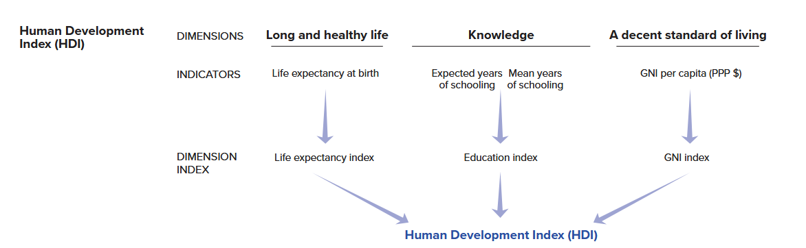
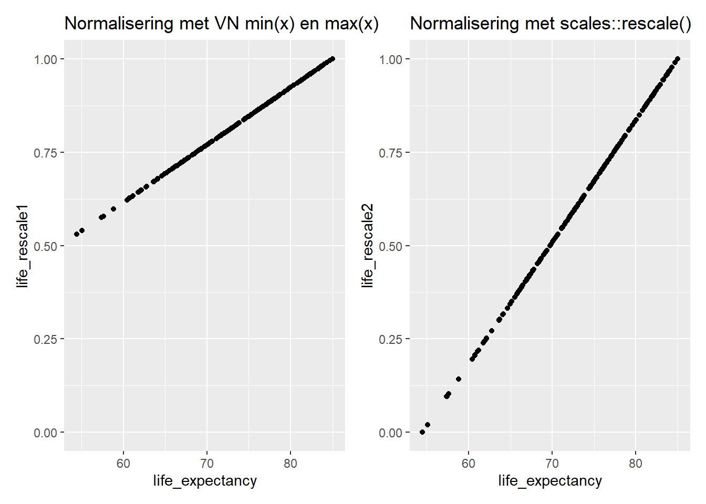

#Packages
library(patchwork) # Grafieken combineren
library(kableExtra) # html tabel maken
library(rio) # data import
library(tidyverse) # Datamanagement enplotten
library(broom) # coëfficiënten
library(performance) # Model en schaal statistieken
library(modelsummary) # Descriptieve statistiektabellen
# Gebruikte datasets
scale_data <- import("scale_data.rda")
hdi_data <- import("hdi_data.csv")Bijlage E — Indexen en schalen
Voor wie is deze appendix?
Je hoeft niet te weten hoe je deze analyses moet uitvoeren voor de opdrachten in Statistiek II. Deze gids is bedoeld voor studenten die hun eindpaper schrijven voor Academische Vaardigheden: Kwantitatieve Data-Analyse of een BAP-scriptieproject.
Soms kan het nuttig zijn om variabelen te combineren tot een enkele variabele of schaal, zowel voor afhankelijke als onafhankelijke variabelen. Stel dat we ‘populistische attitudes’ willen meten, dan kunnen we denken aan een combinatie van anti-elitaire attitudes, het geloof dat de publieke wil het beleid moet sturen en het hebben van een manicheïsch wereldbeeld (i.e. de wereld in termen van goed en kwaad zien).1
Een onderzoeksvraag vergt soms dat we meerdere elementen (variabelen) combineren tot 1 variabele of schaal. Het is vaak ook betrouwbaarder om met meerdere vragen eenzelfde concept te meten dan slechts met 1 vraag. Op het statistiektentamen stellen we ook niet 1 maar meerdere vragen om een betrouwbare test te hebben van hoe goed studenten de leerstof kennen. Ten slotte kunnen we door het combineren van meerdere variabelen tot slechts 1 variabele statistische modellen vereenvoudigen (bv. door niet 10 maar 5 onafhankelijke variabelen toe te voegen: 4 + een index van de andere predictors). Dit samenvoegen is ook handig als predictors sterk gecorreleerd zijn en een model onderhevig zou zijn aan sterke multicollineariteit indien onafhankelijke variabelen samen worden toegevoegd.
Deze appendix bekijkt hoe we op basis van meerdere variabelen slechts 1 variabele of index/schaal kunnen creëeren. Eerst bespreken we algemene principes die een leidraad vormen bij beslissingen over het maken van een schaal. Dan tonen we hoe de betrouwbaarheid van een schaal nagegaan kan worden en hoe we een nieuwe schaal kunnen maken op basis van de som of het gemiddelde van bestaande variabelen. In een tweede uitgewerkt voorbeeld bespreken we wat te doen als de variabelen waarmee je een schaal wil maken gemeten zijn op verschillende manieren.
E.1 Algemene principes
De R code die we in de volgende secties tonen kan gebruikt worden om verschillende soorten indexen/schalen te maken op basis van bestaande variabelen. Het spreekt echter voor zich dat het niet de bedoeling is lukraak wat variabelen bij elkaar te gooien. De beslissing welke variabelen samen te voegen en met welk doel moet gemotiveerd zijn. welke principes daarbij in gedachten moeten worden gehouden bespreken we hier. 2
Conceptualisatie vormt een natuurlijk beginpunt voor het nadenken over schalen. We willen vaak concepten zoals ‘democratie’, ‘populisme’, of ‘ideologie’ empirisch bestuderen, maar deze concepten kennen verschillende facetten of sub-componenten die je niet altijd met 1 vraag kunt meten. Soms gebeurt dit wel, denk bijvoorbeeld aan de gekende vraag over links-rechtspositie, maar ook hier kunnen we ons kritisch de vraag stellen of we hiermee echt een complex concept als ‘ideologie’ meten. Moeten we niet zowel economisch als sociaal-cultureel links-rechts meten bijvoorbeeld?
De vraag die we ons dan stellen is hoe we deze concepten best kunnen meten en of we dat met 1 of meerdere variabelen moeten doen. Bestaande studies helpen hierbij. Het V-Dem project meet bijvoorbeeld democratie (v2x_polyarchy) niet met 1 vraag gesteld aan experten (‘hoe democratisch is…?’) maar met verschillende vragen over bijvoorbeeld hoe vrij en eerlijk verkiezingen zijn, hoe transparant de overheid is enz. Antwoorden op verschillende vragen worden gecombineerd tot 1 getal voor democratie. In een survey vragen we doorgaans niet aan mensen hoe ‘populistisch’ ze zijn. Dit woord wordt meer gebruikt door wetenschappers dan gewone burgers. We kunnen wel vragen of ze akkoord of niet akkoord gaan met stellingen zoals ‘politici zijn geschikter om beleid te vormen dan gewone burgers’ en ‘politici zijn uit op eigenbelang’ en dan een schaal maken op basis van de antwoorden op deze stellingen.
Een valide meting is een meting waarbij de vraag, of de combinatie van vragen in dit geval, gebruikt om het concept te meten alle belangrijke aspecten van het concept bevat. Een meting van democratie zonder een element over vrije en eerlijke verkiezingen zou best vreemd zijn bijvoorbeeld. We willen geen belangrijke dingen vergeten. Aan de andere kant willen we niet te veel elementen opnemen en ons concept niet uitrekken. Een meting van democratie bevat dan meestal ook geen indicatoren over welvaart in de samenleving. Voor validiteit moeten we goed nadenken over wat er nu bij ons concept hoort en wat eigenlijk iets anders is.
Een meting moet ook betrouwbaar zijn: als we de meting opnieuw zouden doen, willen we gelijke of sterk gelijke resultaten. Je wil ook geen weegschaal die je telkens een ander cijfer geeft als je er 3 keer na elkaar gaat opstaan. Voor betrouwbare schalen kunnen we ons vaak beroepen op eerder onderzoek: wat hebben andere onderzoekers gebruikt en met welke resultaten? We kunnen ook echter kijken naar de correlatie tussen verschillende variabelen waarvan we denken dat ze een schaal kunnen vormen om 1 concept te meten. Als de sub-variabelen sterk gecorreleerd zijn, hebben we reden om aan te nemen dat ze verschillende aspecten van eenzelfde concept meten.
E.2 Voorbeeld 1: Emoties en campagne voeren
E.2.1 Data
Waarom doen burgers mee aan verkiezingscampagnes (bv. door de straat op te gaan om mensen aan te spreken of door geld te doneren)? Sommige onderzoekers leggen dit vooral uit door te verwijzen naar mensen hun vaardigheden en welvaart: hebben ze tijd voor vrijwilligerswerk, geld om te doneren, de politieke kennis om mensen te mobiliseren enz.? Maar mensen moeten ook overtuigd zijn dat campagne voeren nuttig en juist is om te doen. Ze moeten met andere woorden gemotiveerd zijn. recent onderzoek wijst uit dat emoties een belangrijke rol kunnen spelen om mensen tot actie aan te zetten. 3 We onderzoeken dit idee op basis van een subset van de 2024 American National Election Studies (ANES) en tonen aan hoe we schalen maken in R.
ANES is gebaseerd op een toevalssteekproef van volwassen Amerikaanse burgers, die ondervraagd worden zowel voor (pre-election) als na (post-election) de nationale verkiezingen. In 2024 werd respondenten gevraagd of zij verschillende soorten campagneactiviteiten hadden ondernomen:
- “Heb je mensen gesproken om hen te overtuigen te stemmen voor of tegen bepaalde kandidaten of partijen?” (
persuade) - “Heb je online deelgenomen aan politieke bijeenkomsten, speeches, geldinzamelingsacties of gelijkaardige zaken om een bepaalde kandidaat te steunen?” (
online_meetings) - “Heb je fysiek deelgenomen aan politieke bijeenkomsten, speeches, geldinzamelingsacties of gelijkaardige zaken om een bepaalde kandidaat te steunen?” (
rallies) - “Toonde je een politiek symbool tijdens de campagne zoals een button, kledingstuk, sticker op de wagen, affiche aan huis?” (
campaign_button) - “Deed je ander werk voor een kandidaat of partij?” (
other_work) - “Heb je geld gedoneerd aan een partij dit verkiezingsjaar?” (
contribute_money_party) - “Heb je geld gedoneerd aan een groep voor of tegen bepaalde kandidaten?” (
contribute_money_group)
Respondenten konden met ‘ja (code = 1)’ of ‘nee (code =0)’ antwoorden.
We bekijken eerst de descriptieve statistieken voor we meer ingewikkelde dingen proberen. We maken gebruik van de psych::describe() functie. De “mean” kolom geeft de proportie weer van respondenten die een bepaalde activiteit hebben ondernomen.
scale_data |>
select(persuade:contribute_money_group) |>
psych::describe() |>
select(vars:mean, min, max)- 1
- We selecteren de variabelen waarvoor we statistieken willen. De campagnevariabelen bevinden zich naast elkaar in de data. We schrijven de eerste en de laatste met een dubbelpunt ertussen om ze allemaal te selecteren.
- 2
-
Door
psych::als prefix te gebruiken hoeven we het package hier niet eerst te laden. Sommige functies van dit package conflicteren namelijk met die vantidyverse. - 3
-
We gebruiken de
select()functie om slechts relevante kolommen weer te geven. Voor binaire variabelen zijn zaken zoals skew en kurtosis niet veelzeggend.
vars n mean min max
persuade 1 4957 0.40 0 1
online_meetings 2 4761 0.10 0 1
rallies 3 4959 0.05 0 1
campaign_button 4 4962 0.14 0 1
other_work 5 4962 0.03 0 1
contribute_money_party 6 4760 0.10 0 1
contribute_money_group 7 4760 0.03 0 1Ongeveer 40% van de respondenten heeft anderen proberen overtuigen. Andere activiteiten zijn minder frequent gebruikt. De verschillende vragen of ‘items’ (sub-componenten van een schaal) zullen we gebruiken voor de afhankelijke variabele.
ANES vroeg respondenten ook naar hun emoties voorgaand aan de verkiezingen met de vraag: Hoe [specifieke emotie] voel je je over hoe de zaken momenteel gaan in het land? De volgende emoties werden bevraagd:
- hoopvol (
hopeful) - angstig (
afraid) - woedend (
outraged) - boos (
angry) - gelukkig (
happy) - bezorgd (
worried) - trots (
proud) - geïrriteerd (
irritated) - nerveus (
nervous)
Respondenten konden antwoorden op een 5-punten schaal: not at all (=1), a little (=2), somewhat (=3), very (=4), en extremely (=5). Ook hier bekijken we de beschrijvende statistieken eerst:
scale_data |>
select(hopeful:nervous) |>
psych::describe() |>
select(vars, n, mean, sd, median, min, max, skew, kurtosis) vars n mean sd median min max skew kurtosis
hopeful 1 4756 2.49 1.11 3 1 5 0.24 -0.69
afraid 2 4757 3.35 1.21 3 1 5 -0.25 -0.84
outraged 3 4752 3.21 1.31 3 1 5 -0.20 -1.03
angry 4 4754 3.23 1.24 3 1 5 -0.17 -0.91
happy 5 4756 2.01 1.01 2 1 5 0.62 -0.46
worried 6 4755 3.58 1.15 4 1 5 -0.41 -0.70
proud 7 4750 2.04 1.06 2 1 5 0.67 -0.44
irritated 8 4753 3.57 1.16 4 1 5 -0.44 -0.68
nervous 9 4758 3.47 1.18 4 1 5 -0.36 -0.73We zien dat respondenten over het algemeen niet zo positief zijn: gemiddelden voor negatieve gevoelens liggen hoger dan die voor positieve gevoelens. Maar er is sterke variatie in de variabelen.
We willen nu de relatie nagaan tussen emoties en campagne voeren. Voor zowel de ‘onafhankelijke’ (emoties) als de ‘afhankelijke’ (campagne) variabelen hebben we meerdere aparte variabelen in de dataset. Hoe gaan we te werk?
We zouden verschillende (logistische) modellen kunnen schatten per campagne-item en telkens alle emotievariabelen toevoegen als predictors. Dit kan een goede aanpak zijn als we willen weten of welbepaalde emoties een andere invloed hebben op welbepaalde activiteiten ten opzichte van andere. Als we geïnteresseerd zijn in de algemene relatie tussen emoties en campagne voeren, maken we indexen of schalen.
Onze emoties verschillen, maar toch kunnen we ook hier een schaal maken als we ervanuit gaan dat positieve en negatieve emoties samen voorkomen (i.e. correleren). We gaan dit eerst na:
scale_data |>
select(hopeful:nervous) |>
rename_with(str_to_title) |>
datasummary_correlation()- 1
- We selecteren de variabelen waarvoor we correlaties willen berekenen.
- 2
-
De
str_to_title()functie komt uit hetstringrpackage (deel vantidyverse). we gebruiken het om de kolomnamen te laten beginnen met een hoofdletter in plaats van een kleine letter, dan moeten we niet individueel de variabelen hernoemen (Zie deze StackOverflow thread. - 3
-
Deze functie uit het
modelsummarypackage maakt een correlatietabel. Zie Hoofdstuk 8 voor verdere informatie.
| Hopeful | Afraid | Outraged | Angry | Happy | Worried | Proud | Irritated | Nervous | |
|---|---|---|---|---|---|---|---|---|---|
| Hopeful | 1 | . | . | . | . | . | . | . | . |
| Afraid | -.33 | 1 | . | . | . | . | . | . | . |
| Outraged | -.33 | .64 | 1 | . | . | . | . | . | . |
| Angry | -.34 | .66 | .77 | 1 | . | . | . | . | . |
| Happy | .61 | -.39 | -.41 | -.40 | 1 | . | . | . | . |
| Worried | -.35 | .75 | .66 | .66 | -.42 | 1 | . | . | . |
| Proud | .60 | -.36 | -.39 | -.39 | .72 | -.41 | 1 | . | . |
| Irritated | -.36 | .64 | .72 | .73 | -.44 | .68 | -.42 | 1 | . |
| Nervous | -.31 | .75 | .62 | .64 | -.36 | .75 | -.35 | .64 | 1 |
Tabel E.1 toont dat positieve emoties positief correleren, dat negatieve emoties positief correleren en dat positieve en negative emoties negatief correleren. Dit lijkt erop te wijzen dat we indexen voor ‘positieve’ en ‘negatieve’ emoties zouden kunnen maken, ook om multicollineariteit tegen te gaan.
E.2.2 Betrouwbaarheid van schalen
De concepten van ‘emoties’ en ‘campagne voeren’ lijken valide en de belangrijkste componenten te bevatten van deze zaken in het echte leven (we kunnen hier natuurlijk verder over reflecteren in de conclusie van onze paper). De positieve en negatieve indexen van emoties hierboven gesuggereerd worden ook ondersteund in de literatuur. Eerder onderzoek over “affective intelligence theory” stelt immers dat menselijk gedrag aangestuurd wordt door twee emotionele systemen. De items staan eigenlijk ook in ANES om dit te testen 4
Maar we moeten ook naar betrouwbaarheid kijken: zou een index van positieve emoties intern betrouwbaar zijn? Meten onze verschillende emoties voldoende hetzelfde ‘positieve’ aspect. De correlaties hierboven (zie Tabel E.1) lijken te zeggen van ja, maar er bestaan ook betere statistische methoden die helpen de vraag te beantwoorden of de correlatie sterk genoeg is.
We gebruiken de Cronbach’s alpha (\(\alpha\)), gebaseerd op de gemiddelde covariantie van de onderliggende variabelen in de schaal.5 De \(\alpha\) maatstaf heeft een bereik van 0 tot 1. Hogere waarden duiden op hogere betrouwbaarheid. De volgende vuistregels gelden:
- \(\geq\) 0.90: Excellente betrouwbaarheid
- 0.80-0.89: Goede betrouwbaarheid
- 0.70-0.79: Aanvaardbare betrouwbaarheid
- 0.60-0.69: Twijfelachtige betrouwbaarheid
- < 0.60: Slechte betrouwbaarheid
Doorgaans gebruiken we geen index met een \(\alpha\) onder 0.6. Bij binaire variabelen kan de betrouwbaarheid echter onderschat worden omdat de \(\alpha\) test eigenlijk continue variabelen verwacht. Er bestaan andere methoden voor binaire data maar deze vallen buiten het materiaal van dit handboek.
We kunnen de \(\alpha\) berekenen met de cronbachs_alpha() functie uit het performance package.
# Campagne index
scale_data |>
select(persuade:contribute_money_group) |>
cronbachs_alpha() [1] 0.6306181# Positieve emoties
scale_data |>
select(hopeful, happy, proud) |>
cronbachs_alpha()[1] 0.8418678# Negatieve Emoties
scale_data |>
select(afraid, outraged, angry, worried, irritated, nervous) |>
cronbachs_alpha()[1] 0.9287744De \(\alpha\) scores voor de emotieschalen zijn 0.84 en 0.93 respectievelijk en dus sterk betrouwbaar. De betrouwbaarheid voor negatieve emoties is vooral hoger omdat er meerdere items gebruikt zijn. De \(\alpha\) score voor campagne voeren is lager: 0.63. Gezien de scores doorgaans lager zijn bij binaire variabelen maken we de beslissing om toch met de index door te gaan.
E.2.3 Som of gemiddelde?
We zullen 3 indexen maken: 1 voor campagne en 2 voor emoties. We moeten een keuze maken tussen variabelen optellen of het gemiddelde nemen. De keuze ligt aan de onderzoeker, maar er zijn wel wat richtlijnen. Bij campagne kijken we naar verschillende activiteiten. Hier houdt het steek om te meten hoeveel verschillende activiteiten iemand heeft gedaan eerder dan of die persoon gemiddeld een activiteit heeft gedaan. Optellen dus. Bij emoties lijkt de originele schaal van 1 tot 5 nuttig: voelt iemand zich helemaal niet of juist sterk zo? Een nieuwe somschaal op 30 (bv. voor negatieve emoties hier) heeft weinig intuïtieve betekenis. Hier nemen we dus het gemiddelde.
We moeten ook rekening houden met ontbrekende waarden. Als we R vragen om een som of gemiddelde te berekenen moeten we zeggen hoe met missing data om te gaan via na.rm = TRUE of na.rm = FALSE. Bij na.rm =TRUE worden missing waarden (NA) weggelaten bij de berekening. Dit is de correcte manier, anders krijgen we ‘NA’ voor de som/het gemiddelde. Zie het verschil hieronder.
# voorbeelddata
x <- c(5, 1, 2, NA, 5)
# gemiddelde berekenen
mean(x, na.rm = TRUE)[1] 3.25mean(x, na.rm = FALSE)[1] NAAls we een index van gemiddelden maken voor 5 items, en 1 (of meerdere) zijn missing, dan wordt het gemiddelde berekend voor de overige 4 (of minder) waarden. Dit is doorgaans prima.
Wat als we een som nemen? We moeten opnieuw na.rm = TRUE gebruiken. Nu geeft de functie een score van 0 voor alle NA waarden bij de optelling. Dit kan soms vreemde gevolgen hebben. Een observatie met enkel missing waarden voor de items zal opeens een 0 krijgen als eindscore en geen NA. Zie onderstaand voorbeeld:
# voorbeelddata
data <- tibble(
x = c(NA, NA, NA, NA, NA),
y = c(0, 1, 0, 0, NA)
)
# Inspectie
data# A tibble: 5 × 2
x y
<lgl> <dbl>
1 NA 0
2 NA 1
3 NA 0
4 NA 0
5 NA NA# Som maken
data |>
mutate(sum_x = sum(x, na.rm = T),
sum_y = sum(y, na.rm = T))# A tibble: 5 × 4
x y sum_x sum_y
<lgl> <dbl> <int> <dbl>
1 NA 0 0 1
2 NA 1 0 1
3 NA 0 0 1
4 NA 0 0 1
5 NA NA 0 1In zekere zin gaan we voor X hier data ‘verzinnen’, wat problematisch kan zijn. We weten immers niet wat echt waar is voor deze observatie. In de ANES survey nam niet iedereen mee aan het gedeelte van de survey dat na de verkiezingen werd afgenomen en waarin de campagnevragen stonden. Voor al deze mensen zouden we dus 0 ingeven, hoewel ze geen respons hebben gegeven. we kunnen deze mensen wel uit de data filteren maar dan blijven er nog respondenten voor wie we geen waarden hebben en eigenlijk niet kunnen zeggen wat ze gedaan hebben.6 Hieronder tonen we hoe dit aan te pakken.
We will show how to find these types of observations and how to deal with them below.
E.2.4 Schalen maken
Eigenlijk hebben we vooral nood aan 2 basisfuncties binnen R: mean() en sum().7 Voorgaand hebben we deze functies op 1 variabele tegelijk toegepast. Nu combineren we meerder variabelen (kolommen in de dataset) tot een gecombineerde variabele (kolom). Dit doen we met behulp van functies uit tidyverse: rowwise() en c_across(). Je kunt meer over deze functies leren via deze vignette.
E.2.4.1 Een index gebaseerd op een gemiddelde
We maken 2 indexen op basis van gemiddelden: eentje voor de positieve emoties en eentje voor de negatieve emoties.
scale_data <- scale_data |>
rowwise() |>
mutate(
positive_emotions = mean(c(hopeful, happy, proud), na.rm = T),
negative_emotions = mean(c(afraid, outraged, angry, worried,
irritated, nervous), na.rm =T)) |>
ungroup()Zo lees je de syntax:
scale_data |> rowwise() |>-
de nieuwe functie hier is
rowwise(). Zonder deze functie zoumutate()gewoon gemiddelden berekenen op basis van alle rijen in de dataset en deze gemiddelden toevoegen aan de dataset (iedereen zou dus dezelfde algemene waarden krijgen voor de variabelen). Metrowwise()vragen we R om gemiddelden per rij te berekenen zodat elke observatie zijn eigen gemiddelde score toegevoegd krijgt. mutate(positive_emotions = mean(c(hopeful, happy, proud), na.rm = T), ...))-
We vragen R om met
mutate()nieuwe variabelen (kolommen) te maken. De eerste variabele noemen wepositive_emotions, de tweedenegative_emotions. Dit is de gemiddelde score voor de waarden van de variabelen aangegeven metc(...). Het gedeeltena.rm = Tvraagt R missing waarden te negeren bij de berekening. ungroup()-
We vragen R om de groepen (gemaakt met
rowwise()) te vergeten zodat dit groeperen per rij niet gebruikt wordt in verdere syntax die gebruikmaakt vanmutate().
We kunnen de data bekijken:
scale_data |>
select(hopeful:negative_emotions) |>
head() |>
kable(digits = 2)- 1
- Automatisch selecteren van de eerste rijen van de data voor presentatie.
- 2
-
kable()wordt gebruikt voor het maken van tabellen in html files. Hier gebruiken we het om ervoor te zorgen dat alle kolommen zichtbaar zijn voor de lezer.
| hopeful | afraid | outraged | angry | happy | worried | proud | irritated | nervous | positive_emotions | negative_emotions |
|---|---|---|---|---|---|---|---|---|---|---|
| 1 | 5 | 5 | 5 | 1 | 5 | 1 | 5 | 5 | 1.00 | 5.00 |
| 2 | 4 | 3 | 3 | 2 | 3 | 1 | 3 | 3 | 1.67 | 3.17 |
| 3 | 5 | 4 | 4 | 2 | 5 | 3 | 4 | 5 | 2.67 | 4.50 |
| 3 | 4 | 2 | 3 | 3 | 4 | 4 | 4 | 4 | 3.33 | 3.50 |
| 2 | 5 | 5 | 4 | 1 | 5 | 2 | 5 | 5 | 1.67 | 4.83 |
| 5 | 1 | 1 | 1 | 4 | 1 | 5 | 1 | 1 | 4.67 | 1.00 |
De eerste respondent was duidelijk ongelukkig met de toestand in de VS. Voor alle positieve emoties wordt de laagste score van 1 gegeven (het gemiddelde voor positieve emoties is dan ook 1). Voor de negatieve emoties werd telkens de maximale score van 5 gegeven (en 5 is dus ook het gemiddelde). Respondent 6 is zowat de tegenpool van respondent 1 terwijl andere respondenten zich meer in het midden bevinden.
Met een Pearson correlatie kunnen we nagaan hoe de twee schalen zich tot elkaar verhouden:
cor.test(scale_data$positive_emotions,
scale_data$negative_emotions,
method = "pearson")
Pearson's product-moment correlation
data: scale_data$positive_emotions and scale_data$negative_emotions
t = -39.523, df = 4758, p-value < 2.2e-16
alternative hypothesis: true correlation is not equal to 0
95 percent confidence interval:
-0.5182429 -0.4754587
sample estimates:
cor
-0.497153 De schalen zijn negatief gecorreleerd met een gemiddeld sterke samenhang. Dit betekent dat respondenten ook ambivalent kunnen zijn en zowel positieve als negatieve gevoelens ervaren.
E.2.4.2 Een index gebaseerd op een som
Het proces voor een index gebaseerd op een som is gelijkaardig, behalve dat we moeten opletten met observaties die ontbrekende waarden hebben voor de variabelen die de schaal/index gaan vormen, zoals hierboven uitgelegd. Deze observaties mogen we niet meenemen in de berekening. We bekijken eerst of er missing waarden zijn over de cases heen:
scale_data <- scale_data |>
rowwise() |>
mutate(engage_missing = sum(is.na(c(persuade, online_meetings, rallies,
campaign_button, other_work,
contribute_money_party, contribute_money_group)))) |>
ungroup()sum(is.na(c(persuade, ..., contribute_money_group))))-
We gebruiken hier
rowwise()gevolgd doormutate()zoals we hierboven al deden. Nu gebruiken we echtersum()om totalen te berekenen. We willen hier berekenen hoeveel van de observaties ontbrekende waarden hebben en voor hoeveel van de onderliggende variabelen. We maken dus ook gebruik van deis.na()functie. Deze functie transformeert achter de schermen de kolommen (variabelen) aangeduid metc()tot binaire variabelen waarbij 0 staat voor valide waarden en 1 voor ontbrekende waarden. Zo berekenen we hoeveel ontbrekende waarden een observatie heeft.
Laten we eens kijken of er observaties zijn met ontbrekende waarden via de table() functie:
table(scale_data$engage_missing)
0 1 3 4 6 7
4752 9 199 2 1 1 De meeste observaties (4752) hebben geen enkele (0) ontbrekende waarde. Sommige respondenten (9) hebben er 1. Er is ook een respondent die voor alle 7 de variabelen een ontbrekende waarde geeft. Deze zouden we eruit kunnen filteren op de volgende manier:8
scale_data <- scale_data |>
filter(engage_missing < 7) Nu kunnen we dan onze index maken. We gebruiken hiervoor de functie c_across():
scale_data <- scale_data |>
rowwise() |>
mutate(campaign_engagement = sum(c_across(persuade:contribute_money_group))) |>
ungroup()campaign_engagement = sum(c_across(persuade:contribute_money_group)))-
Toen we het gemiddelde over een aantal variabelen heen wilden berekenen gebruikten we gewoon de functie
c(). Dat werkt prima, maar kan omslachtig zijn als er veel variabelen zijn om uit te schrijven. Metc_acrosskunnen we de eerste variabele en de laatste schrijven met daartussen een dubbelpunt (persuade:contribute_money_group). Zo selecteert R ook alle tussenliggende variabelen. Deze functie is natuurlijk enkel nuttig als de relevante variabelen netjes bij elkaar staan in de dataset.
Laten we een kijkje nemen naar de uiteindelijke index:
table(scale_data$campaign_engagement)
0 1 2 3 4 5 6 7
2436 1345 504 257 120 60 19 11 Het merendeel van de respondenten is niet betrokken bij campagneactiviteiten. Zij scoren 0 op de index. Een groot aantal respondenten doet 1 activiteit (1345). Hoe meer activiteiten, hoe minder respondenten. Slechts 11 respondenten hebben deelgenomen aan alle 7 de activiteiten.
E.2.5 Model schatten
Nu we al onze schalen gecreëerd hebben kunnen we een regressiemodel schatten. Hier gebruiken we een lineair model met positieve en negatieve emoties als onafhankelijke variabelen en campagne engagement als afhankelijke variabele:9
# Model
engagement_model <- lm(campaign_engagement ~ positive_emotions + negative_emotions,
data = scale_data)
# Coefficients
tidy(engagement_model)# A tibble: 3 × 5
term estimate std.error statistic p.value
<chr> <dbl> <dbl> <dbl> <dbl>
1 (Intercept) -0.648 0.0971 -6.68 2.68e-11
2 positive_emotions 0.320 0.0211 15.2 1.00e-50
3 negative_emotions 0.239 0.0188 12.7 1.73e-36Er bestaat voor beide predictoren een positieve, significante relatie met de afhankelijke variabele. Zowel positieve als negatieve emoties zijn geassocieerd met politieke participatie.
E.3 Voorbeeld 2: verschillende meeteenheden
De schalen die we hierboven hebben gemaakt waren gebaseerd op variabelen die zelf op dezelfde schaal waren gemeten (binaire 0/1 variabelen voor campagneactiviteiten en emotiebelevenis op een schaal van 1 tot 5 voor de emotievariabelen). Het kan echter voorkomen dat we een index willen maken van variabelen die op verschillende schalen gemeten zijn. Dat vergt een enigszins andere aanpak.
E.3.1 Twee benaderingen: normaliseren en standaardiseren
Het tweede voorbeeld richt zich op de Human Development Index (HDI). De HDI is “a summary measure of average achievement in key dimensions of human development: a long and healthy life, being knowledgeable and having a decent standard of living”.
De HDI van landen wordt gemeten op basis van de volgende variabelen: levensverwachting in jaren, scholingsgraad (verwacht en gemiddeld aantal jaren onderwijs genoten), en de welvaart van een land gemeten met het natuurlijk logaritme van het BNI per capita. Deze figuur legt het berekeningsproces uit:

In dit voorbeeld gaan we zelf de HDI scores van landen berekenen op basis van onderliggende data afkomstig van de Verenigde Naties. We richten ons op het jaar 2023.
De volgende variabelen worden gebruikt: levensverwachting bij geboorte in jaren (life_expectancy), het verwachte aantal jaren onderwijs genoten (expected_schooling), het gemiddelde aantal jaren onderwijs genoten (mean_schooling), en het gelogde BNI per capita (gni_percap_logged):10
datasummary(life_expectancy + expected_schooling + mean_schooling + gni_percap_logged ~
Mean + SD + Min + Max + N, data = hdi_data)| Mean | SD | Min | Max | N | |
|---|---|---|---|---|---|
| life_expectancy | 73.11 | 7.16 | 54.46 | 85.00 | 193 |
| expected_schooling | 13.49 | 2.91 | 5.63 | 18.00 | 193 |
| mean_schooling | 9.17 | 3.19 | 1.41 | 14.30 | 193 |
| gni_percap_logged | 9.51 | 1.17 | 6.53 | 11.23 | 193 |
De variabelen zijn duidelijk op verschillende schalen gemeten. Het bereik van levensverwachting loopt van 54 tot 85, terwijl dat van gemiddelde scholing loopt van 1.41 tot 14.30.
Een index met een gemiddelde score over alle variabelen heen zou ons weinig leren. Eerst moeten de variabelen op eenzelfde schaal worden gezet. Hier bestaan twee manieren voor: normaliseren of standaardiseren.
Bij normaliseren herschalen we de variabelen zodat ze allemaal dezelfde minimum- en maximum waarden hebben. De onderstaande formule herschaalt de variabelen zodat ze een bereik van 0 tot 1 hebben. De score van 0 wordt geven aan observaties die de minimumwaarde hadden op de originele variabele. De score van 1 wordt gegeven voor de maximumwaarde op de originele variabele. Moesten we de variabele op een schaal van 0 tot 10 willen brengen, zouden we een vermenigvuldiging met 10 aan de formule kunnen toevoegen.
\[\text{(0-1) Normalized Variable} = \frac{X_{i} - min(X)}{max(X) - min(X)}\]
De HDI maakt grotendeels gebruik van dergelijk normaliseringsproces. Echter worden voor de variabelen niet de minimum- en maximumwaarden in de data gebruikt om het bereik te bepalen, maar zelfgekozen waarden. Voor levensverwachting worden 20 en 85 als minimum en maximum aangeduid. Dit doen ze omdat het aansluit bij de realiteit: “no country in the 20th century had a life expectancy at birth of less than 20 years” and “85 [is] a realistic aspirational target for many countries over the last 30 years.” Voor BNI per capita wordt het minimum gezet op log($100) en het maximum op log($75000). Voor de onderwijsvariabelen is het iets makkelijker. De maxima worden vastgezet op 18 (expected schooling) en 15 (mean schooling) en dan worden de variabelen gedeeld door 18 en 15 respectievelijk om ze te normaliseren.
We blijven in dit voorbeeld trouw aan de VN aanpak en gebruiken manueel deze vastgezette waarden om te normaliseren. We tonen echter ook hoe je met de rescale() functie uit het scales package automatisch kunt normaliseren op basis van de minimum en maximumwaarden die je vindt in de data.
Normalisatie zorgt ervoor dat alle variabelen hetzelfde bereik hebben en kan gebruikt worden voor interval/ratio, ordinale, en binaire variabelen. Normaliseren heeft echter geen impact op de variantie van variabelen. Gezien sommige variabelen een grotere variantie hebben dan anderen kan het zijn dat sommigen meer bijdragen tot de eindscore dan anderen. Een alternatief is om eerst de variabelen te standaardiseren:
\[\text{Standardized Variable} = \frac{X_{i} - \bar{X}}{\text{Std. Dev}(X)}\]
Voor elke observatie trekken we de gemiddelde score over de data heen af van de waarde voor de observatie. Dan delen we de uitkomst door de standaarddeviatie van de variabele. De nieuwe variabele heeft altijd een gemiddelde van 0, waarbij 0 staat voor de gemiddelde score op de oorspronkelijke variabele. Afwijkingen van 0 worden uitgedrukt in standaarddeviaties. De variatie van variabelen wordt hierbij gelijkgezet en zo dragen ze gelijk bij aan de uiteindelijke index. De interpretatie van de gestandaardiseerde variabele is wel anders. Een eenheid hoger op deze variabele betekent 1 standaarddeviatie hoger op de oorspronkelijke schaal. Een gestandaardiseerde variabele met een waarde hoger dan 0 betekent dat de waarde hoger ligt dan het gemiddelde op de oorspronkelijke schaal. Dit betekent echter niet noodzakelijk een ‘hoge’ waarde op de oorspronkelijke schaal gezien het gemiddelde zich niet noodzakelijk in het midden bevindt (cfr. verschil gemiddelde en mediaan). Standaardiseren is vooral nuttig bij interval/ratio variabelen.
E.3.2 Schalen maken
We maken in onderstaande secties de HDI door gebruik te maken van zowel normalisering als standaardisering. We bestuderen ook de verschillen.
E.3.2.1 Normalisering
Voor de HDI wordt gebruik gemaakt van 3 genormaliseerde variabelen: levensverwachting, het gemiddelde van verwachte en gemiddelde scholing in een land, en het natuurlijk logaritme van het BNI per capita (zie bovenstaande uitleg). We zullen eerste manueel normaliseren en dan gebruik maken van de rescale() functie uit het scales package.
Onze eerste stap is het berekenen van het gemiddelde van de onderwijsvariabelen. Eerst normaliseren we beide variabelen. De VN deelt verwachte scholing door 18 en gemiddelde scholing door 15 om een 0-1 schaal te maken (zie uitleg boven). Dan nemen ze het gemiddelde van de twee variabelen. Dit doen we met de volgende syntax, waarbij we de rowwise() functie gebruiken.
# Onderwijsvariabele voor gebruik in HDI
hdi_data <- hdi_data |>
mutate(
expected_yrs_rescale1 = expected_schooling / 18,
mean_yrs_rescale1 = mean_schooling / 15) |>
rowwise() |>
mutate(
education_index_1 = mean(c(expected_yrs_rescale1, mean_yrs_rescale1), na.rm = T)
) |>
ungroup()
# Statistieken bekijken
summary(hdi_data$education_index_1) Min. 1st Qu. Median Mean 3rd Qu. Max.
0.2491 0.5567 0.7130 0.6806 0.8280 0.9636 # Blik op de dataset
hdi_data |>
select(expected_schooling, mean_schooling, expected_yrs_rescale1, mean_yrs_rescale1, education_index_1) |>
head()# A tibble: 6 × 5
expected_schooling mean_schooling expected_yrs_rescale1 mean_yrs_rescale1
<dbl> <dbl> <dbl> <dbl>
1 18 13.9 1 0.927
2 18 13.1 1 0.875
3 16.7 13.9 0.926 0.930
4 18 13.0 1 0.868
5 17.3 14.3 0.962 0.953
6 18 12.7 1 0.849
# ℹ 1 more variable: education_index_1 <dbl>De uiteindelijke indexvariabele heeft een bereik tussen 0 en 1 met een minimum van 0.25 en een maximum van 0.96. Door te kijken naar de relevante variabelen in de dataset kunnen we de berekening volgen. Voor de eerste observatie vinden we het maximum van 18 jaar verwachte scholing. Als we dit delen door 18 vinden we voor expected_yrs_rescale1 het maximum van 1. Voor gemiddelde scholing heeft deze observatie echter niet het maximum maar 13.91.Als we dit getal delen door 15 vinden we voor mean_yrs_rescale1 een getal dichtbij het maximum: 0.93. Het gemiddelde van 1 en 0.93 vinden we bij education_index_1.
We normaliseren nu ook levensverwachting met het VN minimum van 20 en maximum van 85. Voor (log) BNI per capita gebruiken we het VN minimum van log(100) en maximum van log(75000). Hier kunnen we meer de standaardformule voor normaliseren toepassen.
# Normaliseren van variabelen
hdi_data <- hdi_data |>
mutate(
life_rescale1 = (life_expectancy - 20) / (85 - 20),
gni_rescale1 = (gni_percap_logged - log(100)) / (log(75000) - log(100)))
# Statsitieken bekijken
summary(hdi_data$life_rescale1) Min. 1st Qu. Median Mean 3rd Qu. Max.
0.5302 0.7290 0.8229 0.8170 0.8976 1.0000 summary(hdi_data$gni_rescale1) Min. 1st Qu. Median Mean 3rd Qu. Max.
0.2914 0.6120 0.7654 0.7407 0.8924 1.0000 We kunnen zien dat het nieuwe maximum van de variabelen 1 is, de minima zijn hierbij wel niet precies 0 (dat zijn ze wel met de scales methode hieronder besproken).
Ten slotte kunnen we onze index samenstellen door het gemiddelde te nemen van onze 3 variabelen met de rowwise() en mean(c(), na.rm =T)) syntax.11
# Uiteindelijke schaal
hdi_data <- hdi_data |>
rowwise() |>
mutate(hdi_normalize_un = mean(c(life_rescale1, gni_rescale1,
education_index_1), na.rm = T)) |>
ungroup()
# Statistieken bekijken
summary(hdi_data$hdi_normalize_un) Min. 1st Qu. Median Mean 3rd Qu. Max.
0.4059 0.6298 0.7646 0.7461 0.8620 0.9719 De schaal loopt van 0.41 tot 0.97. Hogere waarden staan voor hogere scholingsgraad, levensverwachting en welvaart.
In bovenstaande syntax maakten we gebruik van de minimum- en maximumwaarden bepaald door de VN. Maar we kunnen deze ook uit de data halen. Dit is vaak eenvoudiger, zeker als je geen theoretische basis hebt voor je keuzes zoals de VN. We kunnen de scales::rescale() functie gebruiken om dit automatisch te doen:
hdi_data <- hdi_data |>
mutate(
expected_yrs_rescale2 = scales::rescale(expected_schooling, to = c(0,1)),
mean_yrs_rescale2 = scales::rescale(mean_schooling, to = c(0,1)),
life_rescale2 = scales::rescale(life_expectancy, to = c(0,1)),
gni_rescale2 = scales::rescale(gni_percap_logged, to = c(0,1)))- 1
-
We noemen het package hier in de syntax (
scales::) zodat we het niet hoeven te laden. Hetscalespackage heeft namelijk ook een aantal functies die conflicteren met andere packages die we gebruiken.
Zo lees je de syntax:
scales::rescale(-
We gebruiken de functie
rescale()uit hetscalespackage. We noemen het package in de syntax (scales::) om het niet te hoeven laden. expected_schooling, to = c(0,1))-
We noemen de variabele die we willen normaliseren. Met de
to = c(0,1)vertellen we R dat we de variabele willen herschalen zodat ze een bereik van 0 tot 1 heeft. We zouden deze waarden kunnen veranderen, bv. naarc(0,10)voor een bereik van 0 tot 10.
Laten we kijken naar het verschil tussen de VN-methode en rescale:
# Originele variabele en VN normalisering
p1 <- ggplot(hdi_data, aes(x = life_expectancy, y = life_rescale1)) + geom_point() +
scale_y_continuous(limits = c(0,1)) +
labs(title = "Normalisering met VN min(x) en max(x)")
# Originele variabele en scales::rescale() normalisering
p2 <- ggplot(hdi_data, aes(x = life_expectancy, y = life_rescale2)) + geom_point() +
labs(title = "Normalisering met scales::rescale()")
# Plots combineren met patchwork library
p1 + p2 
Beide genormaliseerde variabelen hebben een theoretisch bereik van 0 tot 1. Maar met rescale wordt er altijd een echt minimum en maximum gevonden in de data en zul je altijd de waarden 0 en 1 terugvinden. De VN heeft echter door het zelf bepalen van minima en maxima in plaats van ze door de data te laten bepalen, het minimum voor de data in de praktijk hoger gelegd (bij 0.53). In 2023 had geen enkel land een levensverwachting van 20, het theoretische minimum van de VN, dus vinden we 0 niet terug. Het theoretische maximum van 85 werd dan wel weer bereikt.
We berekenen nu de index met de scales::rescale() genormaliseerde variabelen:
# Index berekenen
hdi_data <- hdi_data |>
rowwise() |>
mutate(
education_index_2 = mean(c(expected_yrs_rescale2, mean_yrs_rescale2), na.rm = T),
hdi_normalize_scales = mean(c(education_index_2, life_rescale2, gni_rescale2), na.rm = T)
) |>
ungroup()Laten we de twee versies vergelijken:
# Statistieken vergelijken
summary(hdi_data$hdi_normalize_scales) # scales::rescale() Min. 1st Qu. Median Mean 3rd Qu. Max.
0.09029 0.44718 0.65276 0.62116 0.80117 0.96629 summary(hdi_data$hdi_normalize_un) # VN waarden Min. 1st Qu. Median Mean 3rd Qu. Max.
0.4059 0.6298 0.7646 0.7461 0.8620 0.9719 # Correlatie
cor.test(x = hdi_data$hdi_normalize_un,
y = hdi_data$hdi_normalize_scales,
method = 'pearson')
Pearson's product-moment correlation
data: hdi_data$hdi_normalize_un and hdi_data$hdi_normalize_scales
t = 240.73, df = 191, p-value < 2.2e-16
alternative hypothesis: true correlation is not equal to 0
95 percent confidence interval:
0.9978160 0.9987628
sample estimates:
cor
0.9983561 De schalen lopen van 0 tot 1 maar zijn niet volledig identiek. In lijn met wat we hierboven al zagen ligt het minimum hoger bij de VN versie. Toch correleren de twee versies zeer sterk en positief met een pearson correlatie van 0.998. Verschillen zullen dan ook weinig uitmaken in regressieanalyses.
E.3.2.2 Standaardisering
Om te standaardiseren trekken we van een variabele de gemiddelde waarde af en delen we door de standaardafwijking. Hier kunnen we de ingebouwde R-functie scale() voor gebruiken. je hoeft geen package te laden.
# Standaardiseren
hdi_data <- hdi_data |>
mutate(
life_std = scale(life_expectancy, center = TRUE, scale = TRUE),
expected_yrs_std = scale(expected_schooling, center = TRUE, scale = TRUE),
mean_yrs_std = scale(mean_schooling, center = TRUE, scale = TRUE),
gni_std = scale(gni_percap_logged, center = TRUE, scale = TRUE)
)Zo lees je de syntax:
scale(-
We gebruiken de functie
scale()op de variabele tussen haakjes. life_expectancy, center = TRUE, scale = TRUE)-
We benoemen de variabele en vragen R eerst het gemiddelde van de variabele van elke waarde af te trekken met
center = TRUEen dan te standaardiseren door te delen door de standaardafwijking metscale = TRUE.
Laten we de statistieken van de variabelen bekijken:
# Descriptieve statistieken opvragen
hdi_data |>
select(life_std, expected_yrs_std, mean_yrs_std, gni_std) |>
psych::describe() vars n mean sd median trimmed mad min max range skew
life_std 1 193 0 1 0.05 0.04 1.17 -2.61 1.66 4.27 -0.29
expected_yrs_std 2 193 0 1 -0.05 0.05 1.10 -2.70 1.55 4.25 -0.34
mean_yrs_std 3 193 0 1 0.24 0.07 1.13 -2.44 1.61 4.04 -0.52
gni_std 4 193 0 1 0.14 0.05 1.20 -2.54 1.47 4.01 -0.37
kurtosis se
life_std -0.71 0.07
expected_yrs_std -0.51 0.07
mean_yrs_std -0.72 0.07
gni_std -0.80 0.07Alle variabelen hebben een gemiddelde van 0 en een standaardafwijking van 1. De minima en maxima zijn niet dezelfde maar de waarden hebben dezelfde betekenis: hoeveel verschilt de observatie van de gemiddelde waarde van de originele variabele.
We maken nu de index door het gemiddelde van de variabelen te nemen:
# Schaal maken
hdi_data <- hdi_data |>
rowwise() |>
mutate(
hdi_standardized = mean(c(life_std, expected_yrs_std,
mean_yrs_std, gni_std),
na.rm = T))
# Statistieken bekijken
summary(hdi_data$hdi_standardized) Min. 1st Qu. Median Mean 3rd Qu. Max.
-2.12111 -0.73406 0.09892 0.00000 0.75342 1.44253 de schaal loopt van -2.12 tot 1.44 met een gemiddelde waarde van 0. Observaties dichter bij het maximum hebben scores hoger dan het gemiddelde voor (bijna) alle onderliggende variabelen.
E.4 Referenties
Adcock, Robert, en David Collier. 2001. ‘Measurement Validity: A Shared Standard for Qualitative and Quantitative Research’. American political science review 95 (3): 529–46.
Brady, Henry E, Sidney Verba, en Kay Lehman Schlozman. 1995. ‘Beyond SES: A Resource Model of Political Participation’. American Political Science Review 89 (2): 271–94. https://doi.org/10.2307/2082425.
Castanho Silva, Bruno, Sebastian Jungkunz, Marc Helbling, en Levente Littvay. 2020. ‘An Empirical Comparison of Seven Populist Attitudes Scales’. Political Research Quarterly 73 (2): 409–24. https://doi.org/10.1177/1065912919833176.
Marcus, George E, en Michael B Mackuen. 1993. ‘Anxiety, Enthusiasm, and the Vote: The Emotional Underpinnings of Learning and Involvement During Presidential Campaigns’. The American Political Science Review 87 (3): 672–85. https://www.jstor.org/stable/2938743.
Valentino, Nicholas A, Ted Brader, Eric W Groenendyk, Kysha Gregorowicz, en Vincent L Hutchings. 2011. ‘Election Night’s Alright for Fighting: The Role of Emotions in Political Participation’. The Journal of Politics 73 (1): 156–70.
Vasiopoulos, Pavlos, George E. Marcus, Nicholas A. Valentino, en Martial Foucault. 2019. ‘Fear, Anger, and Voting for the Far Right: Evidence from the November 13, 2015 Paris Terror Attacks’. Political Psychology 40 (4): 679–704.
Young, Lauren E. 2019. ‘The Psychology of State Repression: Fear and Dissent Decisions in Zimbabwe’. American Political Science Review 113 (1): 140–55.
Zie Castanho Silva e.a. (2020) voor een bespreking van verschillende populismeschalen.↩︎
Zie bijvoorbeeld Adcock en Collier (2001) voor een meer uitgebreide discussie van de principes uitgelegd hier.↩︎
Zie Brady, Verba, en Schlozman (1995) over de rol van vaardigheden en welvaart in politieke participatie en Valentino e.a. (2011) over de rol van emoties. Hier richten we ons op de positieve rol van emoties op participatie, maar deze kunnen ook negatieve effecten hebben, zie bijvoorbeeld de studie van Young (2019) in Zimbabwe.↩︎
Zie Marcus en Mackuen (1993) voor een baanbrekende studie hierover en meer recent werk van Valentino e.a. (2011) en Vasiopoulos e.a. (2019).↩︎
De formule is: \(\alpha = \frac{k\bar{c}}{\bar{v} + (k - 1)\bar{c}}\). \(k\) = aantal items. \(\bar{v}\) = gemiddelde variantie van de items. \(\bar{c}\) = gemiddelde covariantie van de items.↩︎
Respondenten kunnen weigeren of ‘Don’t know’ antwoorden geven bijvoorbeeld. Deze antwoorden worden doorgaans op missing gezet.↩︎
Probeer een index niet manueel te maken (bv.,
newvar = var1 + var2 + var3). Dit werkt als er geen missing data is, maar dit is in de praktijk vaak niet het geval.↩︎We zouden hier ook de
complete.cases()functie kunnen gebruiken zoals we dat doen om model fit statistieken over modellen heen te kunnen analyseren (zie Paragraaf 6.2). Daarmee zouden we ook observaties wegdoen die maar voor een of enkele variabelen een ontbrekende waarde hebben. Wat we nu doen is ervan uitgaan dat een ontbrekende waarde een probleem vormt als alles ontbreekt, maar dat we in een situatie met zowel valide als ontbrekende waarden mogen uitgaan van een ‘0’ score voor de variabele waar een ontbrekende waarde wordt genoteerd. Dit kunnen we natuurlijk ter discussie stellen. Vaak moeten we een afweging maken over hoe we zoveel data als mogelijk kunnen gebruiken en hoe we zo accuraat mogelijk met de data kunnen omgaan. we zouden ook kunnen beslissen om observaties weg te doen die ontbrekende waarden hebben voor meer dan de helft van de variabelen enz.↩︎OLS modellen zijn niet altijd geschikt voor variabelen waarbij een telling wordt gemaakt (‘count data’). Meer toepasselijke modellen (poisson regressie en negative binomial modellen) vallen echter buiten dit handboek.↩︎
De VN nemen enkele datamanagement stappen vooraleer de HDI te berekenen. Deze hebben wij hier ook genomen. Voor landen met een levensverwachting groter dan 85 wordt de waarde vastgezet op een maximum van 85. Voor landen met een BNI onder 100 wordt de waarde vastgezet op 100 (vooraleer het natuurlijk logaritme wordt genomen). De redenen hiervoor staan uitgelegd hier.↩︎
We berekenen hier gewoon het gemiddelde, maar de VN gebruikt het geometrisch gemiddelde. Hierdoor wijkt onze berekening wat af. Het
psychpackage bevat een functie om het geometrisch gemiddelde te berekenen.↩︎